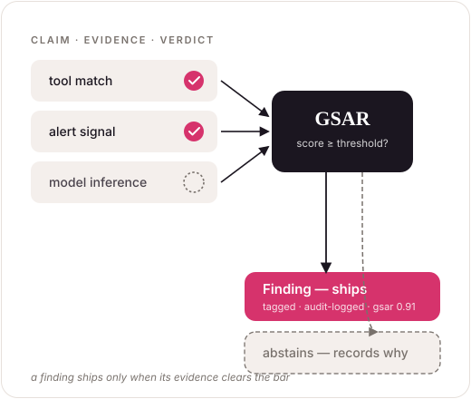

Independent AI security research
An independent lab for AI you can verify.
We research the security of AI systems — the models, the agents, and the infrastructure they run on — and ship what we find: a published grounding method, an open-source SDK that only acts on evidence, and a defender tool with every result.
$ pip install tulip-agents

What we believe
As AI systems take more consequential actions, the question stops being can they? and becomes can you check? We build for the second question — agents whose every decision is a typed, replayable event, and security work that ships the audit tool, not just the headline.
Open source
The agentic AI-security SDK
A Python SDK for grounded security agents: every claim checked against evidence, every action a typed replayable event, every risky step gated.
Research
A method for grounding
Our published method for verifying that an AI's conclusions are actually supported by its evidence — the engine behind the SDK's findings.
The security of AI infrastructure
Ongoing research into the systems AI runs on. First result: identify a co-tenant's model on a shared GPU — and the audit tool to detect it.
Catching the co-tenant
The flip side of the side-channel work: detecting when a neighbour is fingerprinting you on a shared GPU. Early-stage, defender-first, developed in the open.
Open source · Apache-2.0
Tulip
A Python SDK for grounded security agents.
Build agents that audit cloud posture, triage alerts, and fingerprint AI infrastructure — and only ship a finding when the evidence clears the bar. The same Agent class scales to a multi-agent SOC, every step a typed, replayable event. Provider-agnostic: OpenAI, Anthropic, self-hosted vLLM.
# audit a cloud account — grounded by construction from tulip.security import create_soc_analyst, ground_report, is_finding analyst = create_soc_analyst(model="anthropic:claude-sonnet-4-6") result = analyst.run_sync("Audit this account's IAM posture.") for f in ground_report(result.parsed): if is_finding(f): # ships only when evidence clears the bar print(f.severity, f.title, f.gsar_score) else: print("withheld:", f.reason) # ungrounded → abstains
A typed grounding layer: partition an answer's claims into grounded / ungrounded / contradicted / complementary, score the support, and decide — proceed, regenerate, or replan.
Research · grounding
GSAR
How do you know an AI's conclusion is actually supported by its evidence?
Often it isn't — every fact it cites is real, but the conclusion over-reaches. GSAR scores how well an answer's claims are grounded in the evidence behind them, then decides: proceed, regenerate, or replan. It's published, peer-readable, and the engine that makes Tulip's findings trustworthy.
A cross-process GPU timing side channel that fingerprints the inference engine and model on a co-located GPU — and crosses a MIG partition through the shared clock domain. We report accuracies with confidence intervals, position the work against prior GPU side-channel research, and ship a defender self-audit with the findings.
Security research
Clusiana
What can a neighbour learn about your model on a shared GPU?
More than you'd think — no exploit, no privileged access, in about a second. Clusiana is our program on the infrastructure AI runs on; its first project is a cross-process GPU timing side channel that fingerprints a co-tenant's model. The pattern for all our work: name the risk, prove it, then hand defenders a tool they can run.
Tulip Labs is an independent research lab working where agentic AI meets security.
We're small and self-directed, and we publish in the open — the SDK under Apache-2.0, the research with its methods and tools included. We study how AI systems can be attacked and how their actions can be made auditable, and we hold our own work to the same bar we ask of an agent: state the scope, show the evidence, and ship something a defender can run.
If our work touches a system you operate — or you'd like to collaborate — get in touch.
- Focus — agentic-AI security & the infrastructure AI runs on
- Output — an open-source SDK, published research, defender tools
- Licensing — Apache-2.0 SDK; research published in full
- Disclosure — coordinated, via security@tuliplabs.ai
01Open by default
The work that matters is the work others can build on. Our SDK is Apache-2.0; our research is published in full, tools included.
02Measured claims
Numbers with methods behind them. We state scope and limits as plainly as results — what the finding does not show matters as much as what it does.
03Defender-first
Every security finding ships with something a defender can run today. We study attacks to build the audit, not the exploit.
04Reproducible
Experiments are numbered, scripted, and rerunnable. If you can't reproduce it, we haven't finished.